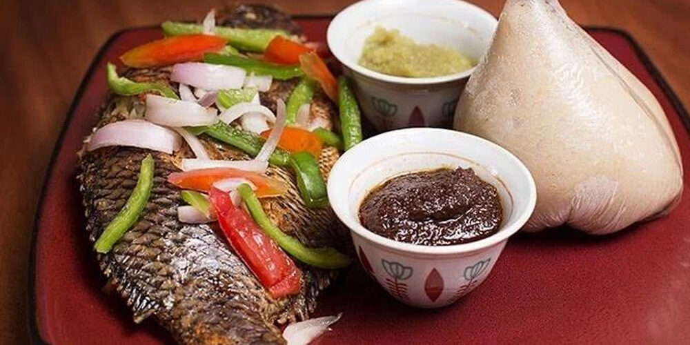
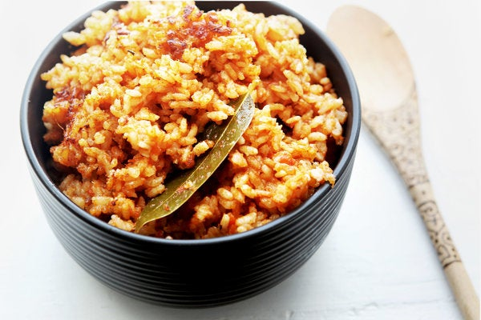
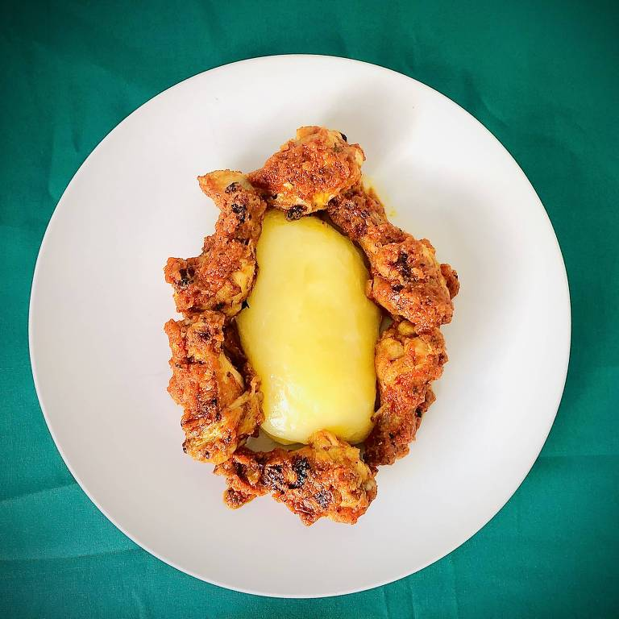
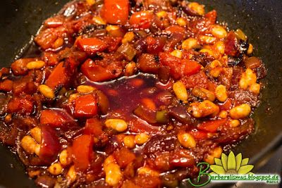
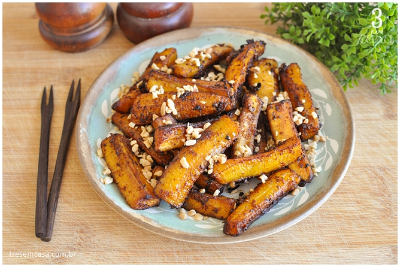
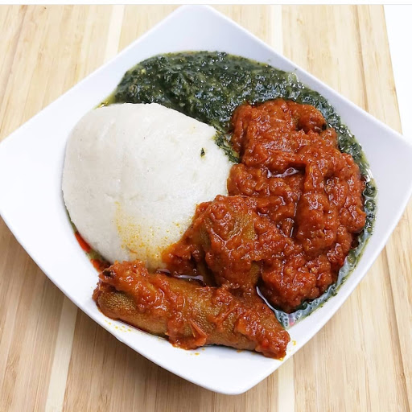
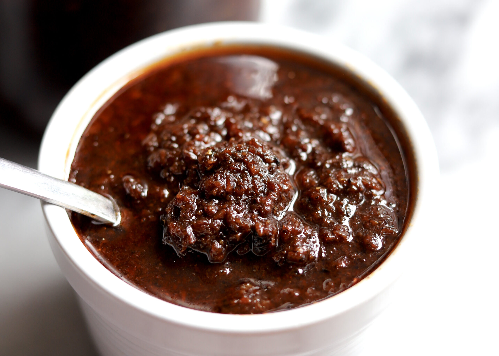
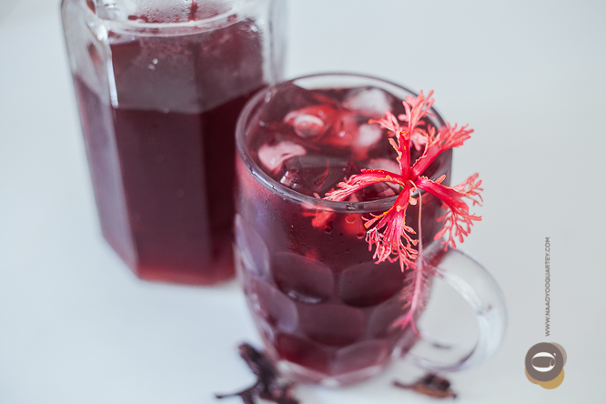

Gana
Comidas Típicas de Gana
A culinária de Gana é uma mistura de influências africanas e europeias que resultou em uma cozinha vibrante e saborosa. Os pratos são caracterizados por seus sabores picantes, usando ingredientes locais como inhame, batata doce, peixe fresco e carnes. Se você estiver em Accra, a capital de Gana, aqui estão 10 pratos tradicionais que você deve experimentar:
- Banku - É um prato feito com farinha de milho e inhame, servido com um molho de peixe ou carne. É um prato popular em todo o país e pode ser encontrado em muitos restaurantes em Accra.

- Jollof Rice - É um prato de arroz cozido com tomate, cebola e especiarias, servido com carne, frango ou peixe. É um prato popular em toda a África Ocidental e pode ser encontrado em muitos restaurantes em Accra.

- Waakye - É um prato de arroz vermelho cozido com feijão preto, servido com uma variedade de acompanhamentos, incluindo carnes, peixes, vegetais e molhos. É um prato popular em todo o país e pode ser encontrado em muitos restaurantes em Accra.

- Fufu - É um prato feito com inhame cozido e batata doce, servido com um molho de amendoim ou okra. É um prato reconfortante e saboroso que você deve experimentar em Accra.

- Kenkey - É um prato feito com farinha de milho e servido com peixe ou carne em molho de pimenta. É um prato popular em todo o país e pode ser encontrado em muitos restaurantes em Accra.

- Red Red - É um prato de feijão cozido com cebola, tomate e especiarias, servido com peixe ou carne. É um prato popular na região do Golfo da Guiné e pode ser encontrado em muitos restaurantes em Accra.

- Kelewele - É um prato de bananas fritas com uma mistura de especiarias, incluindo gengibre, pimenta e pimenta da Jamaica. É um lanche popular em todo o país e pode ser encontrado em muitas barracas de rua em Accra.

- Tuo Zaafi - É um prato feito com farinha de milho e servido com um molho de carne e vegetais. É um prato popular na região norte do país e pode ser encontrado em muitos restaurantes em Accra.

- Shito - É um molho de pimenta feito com especiarias, pimentas e peixe seco. É um condimento popular em todo o país e pode ser encontrado em muitos mercados e lojas em Accra.

- Sobolo - É uma bebida refrescante feita com hibisco, gengibre e especiarias. É um refrigerante popular em todo o país e pode ser encontrado em muitas barracas de rua em Accra.
